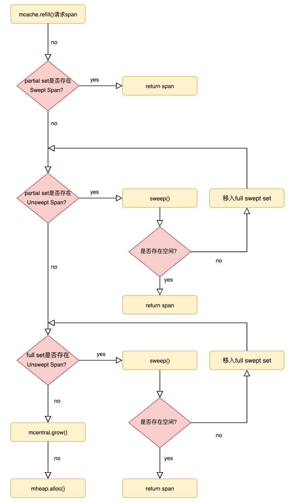

📄 本文共 1461 字，预计阅读 4 分钟
05. 内存管理--mcentral
1. 核心定位与设计
在 Go 运行时的三层分配架构中，小对象分配通常走这条链路：
mcache（per-P，本地无锁快路径） → mcentral（按 size class/scan 属性分组的共享中枢） → mheap（全局页级分配与 span 创建）
mcentral的核心价值不在于“分配对象”，而在于提供可复用的 mspan 并把全局竞争降到可控范围：
- 如果所有 P 都直接向
mheap申请 span，会导致全局锁竞争成为瓶颈。 - 如果把过多 span 长期滞留在
mcache，会引入更高的内存占用与碎片风险。
2. 数据结构解析
mcentral 并非独立存在于堆外，而是直接内嵌在 mheap 结构体中。
type mheap struct {
// ... 其他字段
// 5. 堆内存的“批发市场”(mcentral 数组)
central [numSpanClasses]struct {
mcentral mcentral
pad [cpu.CacheLinePadSize - unsafe.Sizeof(mcentral{})%cpu.CacheLinePadSize]byte
}
}
- 数组结构：
central是一个长度为numSpanClasses（通常为 136，68 * 2包含 scan 和 noscan）的数组 。这意味着每一种规格（如 8B, 16B...）都有一个独立的mcentral实例负责管理。 - Padding 填充：代码中的
pad字段至关重要。不同 P 的 refill 会命中不同 class 的mcentral，让每个mcentral尽量独占 cache line 能显著降低跨核 cache 抖动。
2.1 mcentral 内部结构
type mcentral struct {
// 1. 占位符：防止结构体被分配在堆上（必须嵌入在 mheap 中）
_ sys.NotInHeap
// 2. 规格 ID：当前 mcentral 管理的 span 规格（如 8B, 16B...）
spanclass spanClass
// 3. 有空位的 Span 集合（双缓冲）
partial [2]spanSet
// 4. 无空位的 Span 集合（双缓冲）
full [2]spanSet
}
mcentral 的核心职责是管理两类 Span 链表：
- spanclass：当前 mcentral 管理的 span 规格，mcentral是按class进行加锁申请和分配内存的。
- partial (有空位)：包含“至少有一个空闲对象”的 span 集合。这是
mcache进货时的首选目标。 - full (已满/被占用)：包含“没有空闲对象”的 span 集合。
mcentral的结构如图1所示：
 图1: mcentral示意图
图1: mcentral示意图
结合图1和源码的逻辑，mcentral针对scan和noscan的对象类型进行了分类，
-
scan（contains pointers）：该 class 的对象可能包含指针，GC 标记时需要扫描对象内容以发现引用。
-
noscan（no pointers）：该 class 的对象不包含指针，GC 标记时无需扫描对象内容，从而降低标记成本。
这种设计可以提升垃圾回收的效率，减少垃圾回收的成本。无论何种类型的内存区域，都是通过partial和full列表进行管理，这种设计也可以提升垃圾回收的效率，当mcache进行内存申请时，优先从partial列表获取，然后才回去获取full列表中的span。partial/full [2]spanSet是一个大小为2的数组，并不是1，在源码中，有这么一段逻辑：
// partialUnswept returns the spanSet which holds partially-filled// unswept spans for this sweepgen.
func (c *mcentral) partialUnswept(sweepgen uint32) *spanSet {
return &c.partial[1-sweepgen/2%2]
}
// partialSwept returns the spanSet which holds partially-filled// swept spans for this sweepgen.
func (c *mcentral) partialSwept(sweepgen uint32) *spanSet {
return &c.partial[sweepgen/2%2]
}
// fullUnswept returns the spanSet which holds unswept spans without any// free slots for this sweepgen.
func (c *mcentral) fullUnswept(sweepgen uint32) *spanSet {
return &c.full[1-sweepgen/2%2]
}
// fullSwept returns the spanSet which holds swept spans without any// free slots for this sweepgen.
func (c *mcentral) fullSwept(sweepgen uint32) *spanSet {
return &c.full[sweepgen/2%2]
}
sweepgen 用于标识运行时当前的 sweep generation（清扫代际）。mcentral 将 partial/full 维护为两个集合（[2]spanSet），并通过 sweepgen 推导出“当前视角下的 swept/unswept 索引”（如 sweepgen/2%2 与 1-sweepgen/2%2）。这样在 GC 代际切换时，无需遍历所有 span 重分类，只需 O(1) 地切换索引视图，即可把“已清扫/未清扫”的逻辑分区完成翻转。
3. 核心机制：Full 与 Partial 的流转
mcentral 的高效运作依赖于 span 在 partial 和 full 两个集合间的精准流转。这是一个动态平衡的过程。
3.1 进货逻辑
当某个 P 的 mcache 在某个 spanClass 上耗尽时，会触发 refill。mcentral.cacheSpan 的目标是返回一个“可分配对象的 span”，流程可概括为：
-
查找 Partial (Swept)：优先查找
partial列表中那些已经完成 GC 清扫且有空位的 span。这是最快路径，拿到即用。 -
查找 Partial (Unswept)：如果没找到，尝试查找
partial列表中尚未清扫的 span。找到后，原地触发清扫，如果清扫后有空位，则返回，否则归入适当集合。 -
查找 Full (Unswept)：如果
partial空了，去full列表中找那些“逻辑上满但包含死对象”的 span。对其进行清扫，如果回收了空间，将其移入partial并返回。 -
兜底 (Grow)：如果同规格确实缺 span，则向
mheap申请页并创建新 span。
3.2 归还逻辑
当 span 在 mcache 中被再次填满，或者因为 GC 导致 span 归还时：
-
span 会被移回
mcentral。 -
如果 span 还有空位，放入
partial集合。 -
如果 span 满了，放入
full集合。
3.3 refill流程图
 图2: refill 流程示意
{kind=link}
4. 关键交互：mcentral 与 mheap 的扩容协议
mcentral 自身不持有物理内存的所有权，它只是管理者。真正的内存分配发生在 mheap。
交互流程
- 计算需求：当
mcentral决定扩容时，它根据自身管理的 Size Class，查表得知需要的页数npages（例如：Class 10 需要 2 页，即 16KB）。 - 向 mheap 申请页：进入
mheap的页级分配（内部可能涉及全局锁或更细粒度同步），在 page allocator 中找到连续空闲页并标记占用。 - 初始化 mspan：设置 span 的边界、对象布局相关元数据，并初始化分配位图（allocBits）与 GC 标记位图等。
- 返回给 cacheSpan：作为“进货结果”交给触发 refill 的
mcache，从而恢复小对象分配快路径。
5. 总结
mcentral 是 Go 内存分配器中“化整为零”的关键环节。
- 它通过 Span Class 将内存管理标准化。
- 它通过 Partial/Full 双集合 机制，实现了内存的惰性清理与高效复用。
- 它通过 Per-Class 的细粒度锁，在避免全局锁竞争的同时，保证了多线程分配的安全性 。